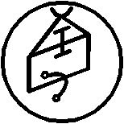

Kırk ikinci İsim LUGALUGGA’dır
Bütün Ruhların, Ölülerin ve Doğmamışların ve aynı zamanda Yıldızsıların ve Dünyasalların ve Havanın Ruhlarının ve Rüzgarın Ruhlarının da Özünü bilir. Bunlar hakkında seninle konuşur ve bilgeliğin artar. Kelimesi ZIDUR’dur ve mührü böyledir:
